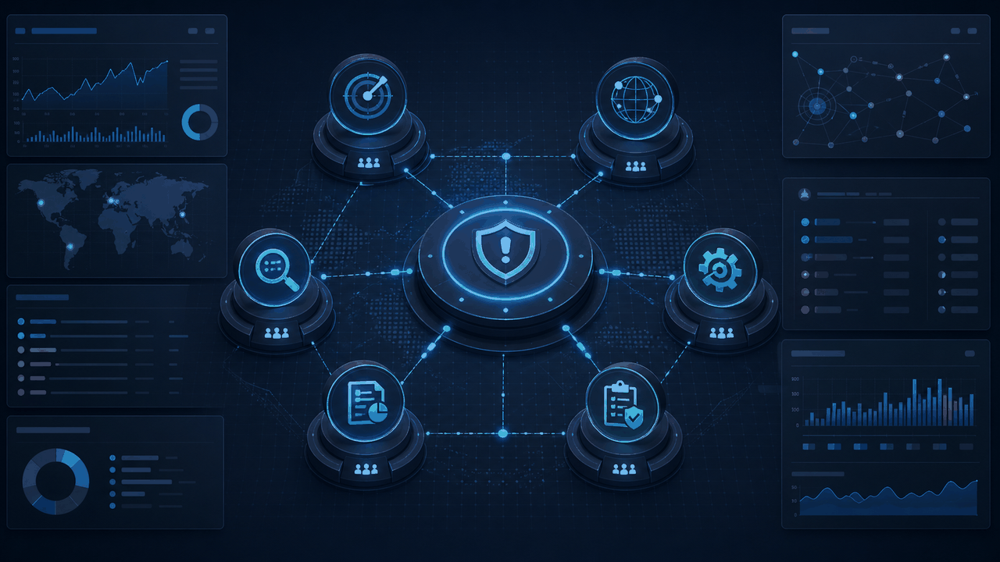
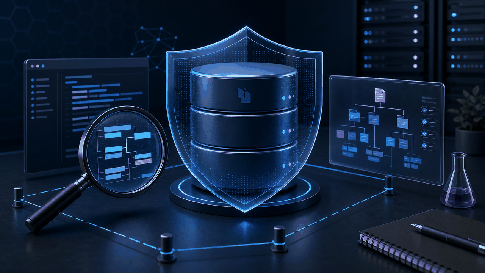
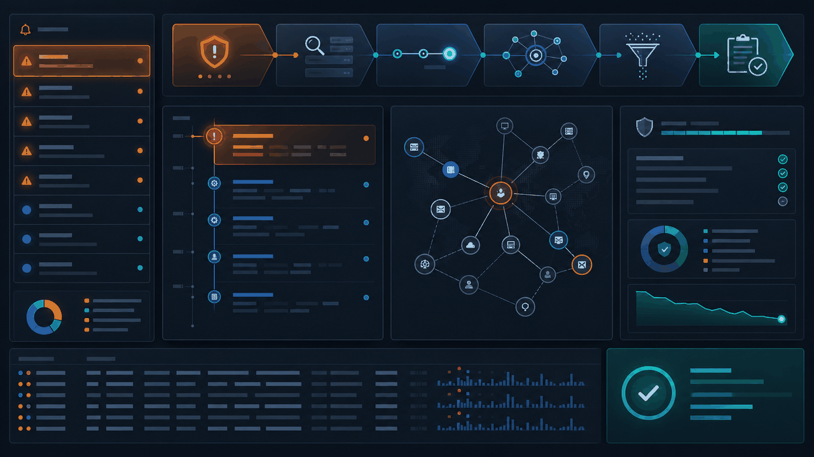

Tampa, Florida · Open to cybersecurity opportunities
Hi, I’m Vennela Adipudi.
Cybersecurity professional building at the intersection of SOC operations and AI security automation.
Focused on incident response, application security, threat detection, and multi-agent systems that help analysts investigate faster and act with confidence.
SOC & Incident ResponseApplication SecurityAI SecuritySecurity Automation
Current focusAI-augmented security operations
Detect
Investigate
Automate
01 / About
Security thinking, built for action.
I’m a cybersecurity student at the University of South Florida with hands-on experience in SOC operations, application security, incident response, and AI-powered security automation. I’ve worked with SIEM platforms, GreyMatter, log analysis, threat detection workflows, and multi-agent cybersecurity systems using LLMs, MCP integrations, LiteLLM, and agent orchestration frameworks.
I enjoy building tools that help analysts investigate alerts faster, reduce false positives, and turn complex security data into clear remediation guidance.
02 / Capabilities
Tools for modern defense.
From telemetry to triage to intelligent automation.
Cybersecurity & SOC
SIEM & Security Tools
AI for Security
Data & Analysis
Systems & Developer Tools
03 / Experience
Hands-on security operations.
GuidePoint Security
Application Security Intern
- Architected a multi-agent cybersecurity investigation platform using Opencode, LiteLLM, and MCP integrations to automate incident triage, threat intelligence analysis, remediation guidance, reporting, and quality assurance workflows.
- Supported development of a Capital One cyber range for AI security training and simulations.
- Analyzed security alerts within a cyber range and evaluated AI effectiveness across multiple attack and response workflows.
- Presented a capstone project and live demonstration to 100+ stakeholders.
ReliaQuest
GreyMatter Operations Intern
- Monitored and managed the end-to-end alert lifecycle across 6+ SIEM platforms, including QRadar, LogRhythm, Splunk, Exabeam, Sumo Logic, and Microsoft Sentinel, using GreyMatter.
- Investigated live security alerts through log analysis, reducing false positives and improving detection accuracy.
- Performed root-cause analysis on active incidents and contributed to detection rule improvements for recurring threat patterns.
- Translated technical findings into clear incident reports for customers and non-technical stakeholders.
ReliaQuest Cybersecurity Labs
Cybersecurity Lab Participant
- Completed a four-week cybersecurity program using GreyMatter to perform incident analysis on real-time exploits.
- Analyzed attack lifecycle phases, identified threat actors, interpreted logs, and developed mitigation strategies.
- Completed hands-on labs in a team environment, strengthening leadership, communication, and problem-solving skills.
04 / Selected projects
Automation with an analyst mindset.
Security projects grounded in controlled testing, practical workflows, and clear outcomes.

AI Security Automation
Multi-Agent Incident Response Platform
Built a multi-agent AI security automation platform that simulates SOC analyst workflows across alert triage, threat intelligence, investigation, reporting, remediation guidance, and QA review.
- Orchestrated specialist AI agents across an end-to-end investigation workflow.
- Benchmarked outputs against attack scenarios to evaluate investigation quality and response effectiveness.
- Generated structured findings with MITRE ATT&CK mappings, threat assessments, and remediation guidance.
PythonLiteLLMMCPLangChainReActMITRE ATT&CK

Authorized Lab Project
Automated NoSQL Injection Security Tool
Developed a Python-based testing tool for authorized NoSQL injection lab challenges, automating blind enumeration and flag extraction in a controlled environment.
- Automated character-by-character blind enumeration with custom Python scripting.
- Improved test speed compared with manual Burp Suite attempts.
- Used LLM-assisted scripting to optimize testing logic in an authorized lab context.
PythonBurp SuiteWeb SecurityAutomation

SOC Case StudyInvestigation workflow
SOC Alert Investigation Workflow
A practical case study showing how SIEM telemetry moves from alert triage through log correlation, root-cause analysis, false-positive reduction, and stakeholder-ready incident reporting.
- Correlates evidence across heterogeneous SIEM and security telemetry.
- Maps investigation findings to the attack lifecycle and MITRE ATT&CK.
- Turns technical context into concise findings and recommended next actions.
GreyMatterSplunkQRadarSentinelMITRE ATT&CK
05 / Education
Academic foundation.
University of South Florida · College of Engineering
Bachelor of Science in Cybersecurity
Expected graduation: December 2026 · Dean’s List
Tampa, Florida
06 / Credentials & community
Always sharpening the signal.
Certifications
- CompTIA Security+Expected August 2026
- Google Cybersecurity Professional Certificate
- AI Fluency: Framework & Foundations
- Claude 101
- Git and GitHub Certificate
Leadership & involvement
- Society of Women EngineersSWE
- Women in CyberSecurityWiCyS
- Whitehatters Computer Security Club
07 / Contact
Let’s make security operations smarter.
I’m interested in cybersecurity analyst, SOC, incident response, application security, AI security, and security automation opportunities.
1vennela2018@gmail.com
Tampa, Florida